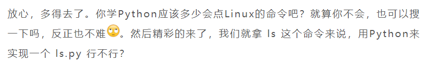
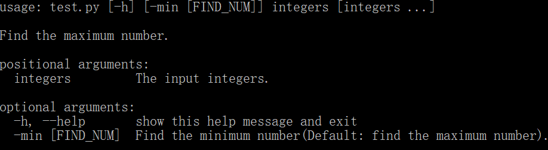
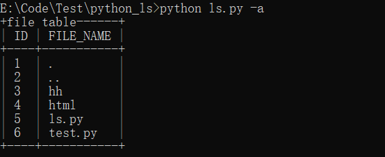
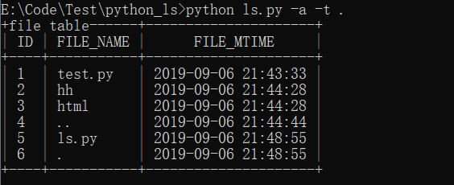
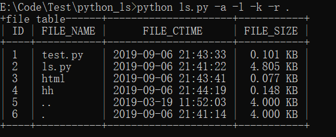

前几天在微信上看到这样一篇文章，链接为：https://mp.weixin.qq.com/s/rl6Sgv3uk_IpoFAx6cWa8w，在这篇文章中，有这样一段话，吸引了我的注意：

在 Linux 中 ls 是一个使用频率非常高的命令了，可选的参数也有很多， 算是一条不得不掌握的命令。Python 作为一门简单易学的语言，被很多人认为是不需要认真学的，或者只是随便调个库就行了，那可就真是小瞧 Python 了。那这次我就要试着用 Python 来实现一下 Linux 中的 ls 命令， 小小地证明下 Python 的不简单！
Linux ls 命令用于显示指定工作目录下的内容。语法如下：
ls [-alkrt] [name]
这里只列举了几个常用的参数，ls 命令的可选参数还是很多的，可以使用 man ls 来进行查看具体信息。这里列出的几个参数对应含义如下：
1）-a：显示所有文件及目录；
2）-l：除文件名称外，亦将文件大小、创建时间等信息列出；
3）-k：将文件大小以 KB 形式表示；
4）-r：将文件以相反次序排列；
5）-t：将文件以修改时间次序排列。
主要使用的模块是 argparse 和 os，其中 argparse 模块能设置和接收命令行参数，也就使得 Python 对命令行的操作变得简单，而 os 模块则用于文件操作，对 argparse 模块不熟悉的可以在这里查看官方文档。
既然要用 Python 实现 ls.py， 也就要在命令行中进行操作，比如 python ls.py -a 这样的命令，而对 Python 比较熟悉的人可能会想到使用 sys 模块来接收输入的命令，但使用 argparse 能让命令行操作变得更加简单！首先要导入模块并创建一个 ArgumentParser 对象，可以理解为一个解析器，然后就可以通过使用 add_argument() 方法为这个解析器添加参数了。示例如下：
1 # test.py
2 import argparse
3
4 parser = argparse.ArgumentParser(description='Find the maximum number.')
5 parser.add_argument("integers", type=int, nargs="+", help="The input integers.")
6 parser.add_argument("-min", nargs="?", required=False, dest="find_num", default=max, const=min,
7 help="Find the minimum number(Default: find the maximum number).")
8
9
10 args = parser.parse_args()
11 print(args)
12 print(args.find_num(args.Nums))这段代码的功能是输入一到多个整数，默认求其中的最大值，若有 -min 参数则是求其中的最小值。可以看到在创建解析器和添加命令行参数的时候都设置了 description 描述信息，这个信息会在我们使用 --help 命令的时候显示出来，例如：

在上面的代码中，需要注意的是其中使用 add_argument() 添加了一个位置参数 "integers" 和一个可选参数 "-min"，位置参数在命令行中必须存在，不可遗漏，也就不能设置 required 参数了，而可选参数就不是必须要有的了，因而还可以使用 default 参数设置默认值。nargs 参数用于设置命令行参数的数量，"+" 表示一个或多个，"?" 表示零个或一个，这里由于输入的数字可能有多个，所以要设置为 "+"。最终运行示例如下：
> python test.py 1 3 5
Namespace(find_num=<built-in function max>, integers=[1, 3, 5])
5> python test.py 1 3 5 -min
Namespace(find_num=<built-in function min>, integers=[1, 3, 5])
1
关于 argparse 的介绍就到此为止了，下面简单介绍下 os 模块， os 模块提供了便捷的使用操作系统相关功能的方式，实现 ls.py 所用到的该模块下的方法包括：
1）os.path.isdir(path)：若 path 是一个存在的目录，返回 True。
2）os.listdir(path)：返回一个列表，其中包括 path 对应的目录下的内容，不包含“.”和“..”，即使它们存在。
3）os.stat(path)：获取文件或文件描述符的状态，返回一个 stat_result 对象，其中包含了各种状态信息。
ls.py 中的主函数如下，主要功能为创建解析器，设置可选参数和位置参数，然后接收命令行参数信息，并根据输入的参数调用相应的方法，这里设置了一个 "-V" 参数用于显示版本信息，可以使用 "-V" 或者 "-Version" 进行查看。
1 def main():
2 """
3 主函数，设置和接收命令行参数，并根据参数调用相应方法
4 :return:
5 """
6 # 创建解析器
7 parse = argparse.ArgumentParser(description="Python_ls")
8 # 可选参数
9 parse.add_argument("-a", "-all", help="Show all files", action="store_true", required=False)
10 parse.add_argument("-l", "-long", help="View in long format", action="store_true", required=False)
11 parse.add_argument("-k", help="Expressed in bytes", action="store_true", required=False)
12 parse.add_argument("-r", "-reverse", help="In reverse order", action="store_true", required=False)
13 parse.add_argument("-t", help="Sort by modified time", action="store_true", required=False)
14 parse.add_argument("-V", "-Version", help="Get the version", action="store_true", required=False)
15 # 位置参数
16 parse.add_argument("path", type=str, help="The path", nargs="?")
17
18 # 命令行参数信息
19 data = vars(parse.parse_args())
20 assert type(data) == dict
21 if data["V"]:
22 print("Python_ls version: 1.0")
23 return
24 else:
25 check_arg(data)然后是一个获取指定路径下的内容信息的函数，要做的就是判断路径是否存在，若存在就返回一个文件列表，若不存在则显示错误信息，并退出程序。
1 def get_all(path):
2 """
3 获取指定路径下的全部内容
4 :param path: 路径
5 :return:
6 """
7 if os.path.isdir(path):
8 files = [".", ".."] + os.listdir(path)
9 return files
10 else:
11 print("No such file or directory")
12 exit()
下面是 ls.py 运行后的部分结果截图。
首先是 python ls.py -a，这里并没有输入路径，就会使用默认路径即当前目录，如下图：

然后是 python ls.py -a -t .，使用该命令会显示当前目录下的所有内容，并按照创建的时间进行排序，如下图：

最后是 python ls.py -a -l -k -r .，也是显示当前目录下的所有内容并按照创建名称排序，不过这次文件大小会以 KB 为单位来显示，如下图：

到这里为止，ls.py 就算是基本实现了，当然还是有很多可以去实现的功能的，比如更多的参数等等，如果你感兴趣的话可以自己尝试一下==
完整代码已上传到GitHub！